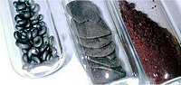

Numero atomico: 34
Massa atomica: 78,96
Temperatura di fusione (°C): 221
Temperatura di ebolizione (°C): 685
Energia di prima ionizzazione (kj/mol): 941
Elettronegatività (secondo Pauling): 2,55
Densità: 4,81
Numeri di ossidazione: -2+4+6
Configurazione elettronica: 1s2, 2s2, 2p6, 3s2, 3p6, 3d10, 4s2, 4p4
Maggiori Informazioni